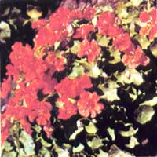

The unusual tang of this edible flower might surprise you!
PHOTO COURTESY OF GEORGE W. PARK SEED COMPANY, INC.
Christopher Nyerges
As a long-time wild-foods enthusiast, I've collected edible plants in all sorts of unlikely spots . . . but I'd never harvested food from a flower garden until a family friend introduced me to the attractive yellow orange blossoms and round leaves of the common nasturtium ( Tropaeolum majus ). After being assured (and reassured) that the plant was both edible and tasty, I chomped down on a long, succulent stem. The flavor was initially sweet, but as I continued to chew, it became hot and peppery . . . like a radish. "Wow!" I thought, my eyes watering and my sinuses opened wide. "That's good! "
Since then, I've developed a real liking for the tang of the nasturtium plant, and I use its leaves and flowers (both of which are milder than the stems) in a variety of dishes. Because they taste something like a spicy-as is the case when the plant has bolted-watercress (indeed, the botanical name for watercress is Nasturtium officinale ), nasturtium leaves can be added to any type of green salad ... or even sprinkled into soups. Furthermore, when mixed with chives, both the leaves and blossoms blend beautifully into omelets or potato salad.
GROW IT...
This Peruvian native was introduced into Europe back about 1686. During the late 1700's, the famous Swedish botanist Carolus Linnaeus noted the similarity in appearance between the plant's brilliant flowers and the gold (and often blood-stained) helmets-called tropaea -worn by ancient Roman warriors . . . hence the Latin name of Tropaeolum .
The popular annual flourishes in sandy soil (it's often found growing wild along the Pacific coast of the U.S.) and prefers full sun and well-drained ground. Both kinds of nasturtium-there's a climbing variety and another that looks like a ground cover-can become unruly if they're left untouched . . . but most gardeners still enjoy cultivating the plant for its striking appearance and easy care. You'll find nasturtium seed at your local nursery: It's usually available in double-or single-blossom varieties . . . and in mixed colors or single shades. [ EDITOR'S NOTE: Although the rest of the plant is safe to eat, nasturtium seeds can be toxic. ]
In addition to its pleasing flavor, the nasturtium is a rich source of vitamin C . . . and is reputed to contain an herbal equivalent of penicillin, which helps the body fight off infections. It's an easy plant to cultivate, too . . . and is, in fact, often recommended as a good starter flower for beginning horticulturists.
...PREPARE IT ...
Tropaeolum cuisine, you'll discover, can be surprisingly varied. The young seed pods, for example, are commonly pickled and used as substitutes for capers . . . while the greenery and blossoms make attractive garnishes for any meal. Besides spicing up raw garden salads, nasturtium leaves can be stuffed like grape leaves . . . cooked and served as you would spinach (the dish goes well with a garlic butter seasoning) ... or chopped up and sprinkled into luncheon spreads.
For instance, here's a simple-to-prepare cheese spread featuring the piquant flavor of the nasturtium's leaves. You should make it just before serving, and be sure to have all the ingredients ready before you begin, since the foliage will turn bitter and the radishes will become soft if they stand very long.
First, wash a bunch of small radishes thoroughly and remove their tops. Cut a few of them into thin slices, and coarsely grate the rest. Quickly chop up a table-spoon of nasturtium leaves and blend them-along with the grated radishes and a teaspoon of lemon juice-into eight ounces of softened cream cheese. Slather the mixture on thin slices of rye bread or pumpernickel, and top each serving with a whole nasturtium leaf and a radish slice.
...AND SAVOR IT
The colorful red and green flecks, peppery flavor, and crunchy texture of this uncommon sandwich spread will have your guests wondering (probably out loud) just what it is they're eating. You can keep your secret, though. Simply tell them it's a nutritious, easy food . . . that you make whenever you thin your flower garden!
|
 PHOTO COURTESY OF GEORGE W. PARK SEED COMPANY, INC. |
|
|